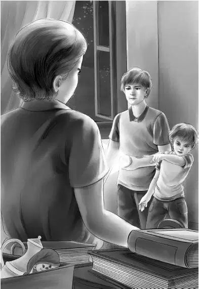

The next day everyone saw Freddy Willet coming and going about the island in his red sports car. But no one ever saw him open the trunk， and there were no boxes in the front of the car.
“He must be hiding the library books in the schoolhouse，” said Benny. “There’s no other place here where he could hide the bigger things he has traded. But Mr. Carter can’t find a thing.”
Henry looked serious. “Time is getting short，” he said. “In another day or two Freddy will have everything of value that can be found on this island.”
After supper the Aldens found a long note hidden in the hollow log on the beach. In it John Carter said，
Fred Willet is Harold K. Frederic. He has two other names he also uses. Canadian police want him for smuggling. All we have to do is get him to the border.
That evening the Aldens sat outside their hotel as they always did. When it was quite dark， they grew more and more excited. They were sure something was going to happen. They were not at all surprised to hear a whisper: “Benny， follow me.”
While the others talked about the weather， Benny slipped after John Carter.
At first Benny thought that the schoolhouse was dark. Then he saw that something had been hung over a window. It was a car blanket. A dim light showed through another window.
Without a word， John Carter and Benny crept in at the back door. They went into the tiny chimney room. Mr. Carter looked through the hole in Washington’s coat button. He let Benny look.
The room was faintly lighted by a square flashlight on one of the desks in the back of the room. At first Benny could not tell what Freddy Willet was doing. Then he saw. The man was taking the wood out of the woodbox！
“His hiding place！” whispered Mr. Carter. “Now let me look.”
When all the wood was out of the woodbox， Mr. Willet turned the box upside down very carefully and poured coin after coin on the back desk. He swept them quickly into a strong bag.
“The books？” whispered Benny.
Mr. Carter shook his head. Then he was really surprised. Mr. Willet went to the bookcase that held the school books and took them all out. He took out a board in the back of the bookcase. Then he began to take out the old books from the library.
Mr. Carter stepped aside to let Benny look through the hole. Book after book came out of the space behind the shelf. Then came the doll， the buttons， the gold pins， the iron bank—everything.
Benny was thinking hard. “Mr. Willet must have been in the schoolhouse many times before. It took a long time to fix that hole behind the school books. That’s what he was doing when we couldn’t find him. My， what a lot of books！What will he do with them？”
He soon found out. Freddy took six books and began to tie them up with string. He set them on another desk. Soon he had sixty books. Then he put the board back， and fixed the school books just as they had been.
Mr. Carter took Benny’s place at the peephole. He was not a minute too soon， for Freddy took some books in one hand and was reaching to put out the flashlight when he heard Mr. Carter’s voice.
“Hold it， Willet！Don’t move！The front door is locked now！”

Mr. Carter and Benny dashed down the back hall and into the schoolroom. Mr. Willet did the only thing he could do. He put out his light.
But this did him no good， for when his light went out， Mr. Carter’s went on.
“What’s the matter with you？” shouted Freddy. “I haven’t done anything！”
“Oh， yes， you have！” said John Carter. “Just put those books down. What about all the little things you traded？What about the coins？”
“They were fair trades！” shouted Freddy. “Everyone was satisfied. They were glad to trade.”
“That’s because they did not know the things were antiques，” said Mr. Carter. “And what about these books？A trade？”
“I borrowed those books. You just sign your name and take what you want. And I signed mine！”
“Which name did you sign， Freddy？” asked Mr. Carter softly.
Then Freddy knew he was in trouble. He had three or four names， and John Carter knew every one of them. Mr. Carter went on. “The Canadian police want you， Freddy. They will be very glad to see you. You have been smuggling for years. You made a great mistake to try it again. No， leave all the things right where they are！”
Mr. Willet made one last try. “You aren’t a policeman. You can’t arrest me.” He was very angry.
“You’re wrong，” said John Carter. “I was made a special policeman a week ago in Northport. But you’ll be glad to know that the chief of police from Northport is sitting in your red car out in the bushes.”
That stopped Freddy for a minute. Then he said， “Now， listen！I’ve paid these people a lot of money for old coins.”
“Not enough，” said John Carter. “You were going to sell the coins to the Adams College Museum. We can do that for you， and thanks very much for picking out the best ones！”
“You’ll have to pay me back what I paid，” said Freddy.
“We will， in time，” said Mr. Carter. “Nobody is going to cheat you， Freddy. But money won’t do you much good in prison. Ah， hello， Anderson！Benny and I are glad to see you.”
A tall policeman from Northport had come in the back door.
Freddy growled， “The Alden kids did this！”
“Yes，” agreed Mr. Carter， “the Alden kids did this. They did their duty as American citizens. They just did what was right.”
Mr. Anderson said to Benny， “We all thank you， and so will Canada. We have tried for years to catch Mr. North.”
“Mr. North！”
“Yes， and Mr. Frederic and Mr. Benson. They are all Freddy Willet. We will go in his own car.”
Freddy Willet was smart. He knew when he was caught. He went with the policeman without another word. It was low tide， just as Freddy had planned， and the road to Canada was straight before the two men.
Standing outside the hotel， Grandfather， Henry， Jessie， and Violet saw the car disappear over the stones and gravel to the mainland.